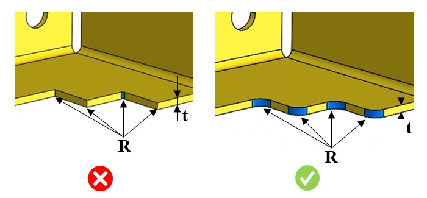

最小コーナー半径は、ユーザーが指定した値に従う必要があります。
パンチやダイの内側にある鋭利なコーナーは応力集中点となり、部品の使用中に割れや破損を引き起こす可能性があります。このような欠陥は、二次加工によってコーナーに半径（丸み）を付けることで回避できます。
一般的な目安として、最小コーナー半径は板厚の 1/2 とし、0.8 mm（0.031 インチ）未満にすべきではありません。
許容面取り角度：このルールでは、材料角度が許容面取り角度の値以上である鋭利なエッジを除外します。

ここでは、
R = コーナー半径
t = シートメタル厚さ